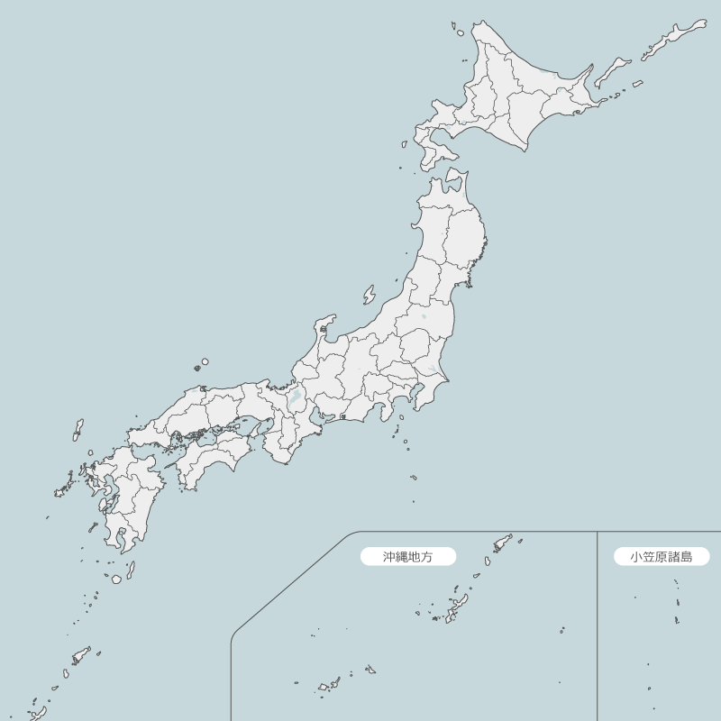
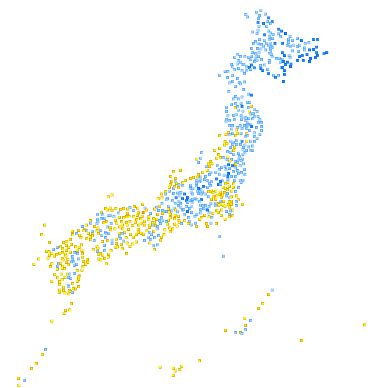

北海道地方
宗谷
上川
留萌
石狩
空知
後志
ｵﾎｰﾂｸ
根室
釧路
十勝
胆振
日高
渡島
檜山
東北地方
青森
秋田
岩手
宮城
山形
福島
関東地方
茨城
栃木
群馬
埼玉
東京
千葉
神奈川
甲信地方
長野
山梨
東海地方
静岡
愛知
岐阜
三重
北陸地方
新潟
富山
石川
福井
近畿地方
滋賀
京都
大阪
兵庫
奈良
和歌山
中国地方
岡山
広島
島根
鳥取
山口
四国地方
徳島
香川
愛媛
高知
九州地方
福岡
大分
長崎
佐賀
熊本
宮崎
鹿児島
沖縄地方
沖縄
7月14日21時現在

